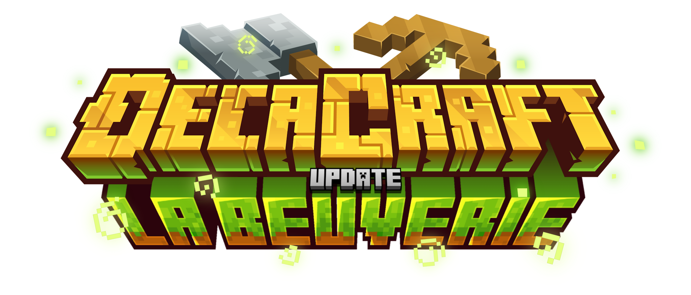
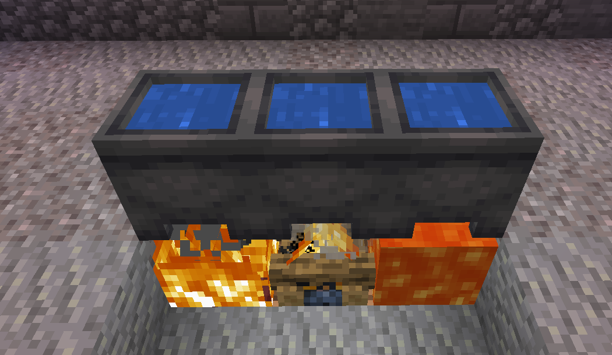
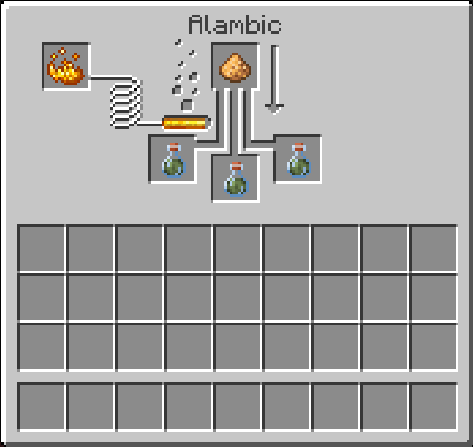
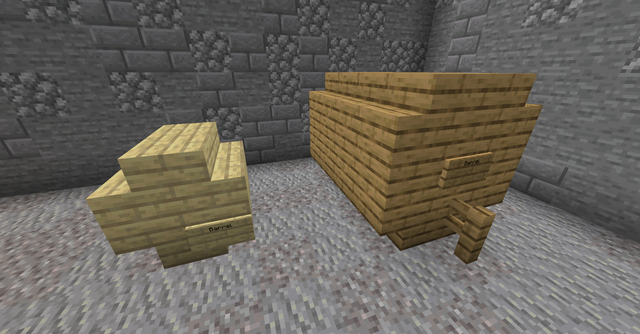
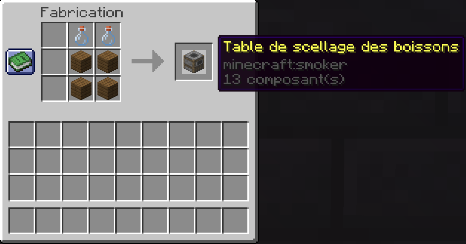

Boisson et Alcool

Depuis la mise à jour La Beuverie, tu peux fabriquer des boissons et de l’alcool sur DecaCraft. Une série de
En résumé
Chaque boisson se fabrique en 4 étapes, puis peut être vendue :
⏱️ Le temps est réel. Il continue de s’écouler même si tu es déconnecté ou si la zone n’est pas chargée. Dormir n’accélère rien.
Les recettes
Un livre de recettes t’est donné par le PNJ Rodolphe, dans la taverne du spawn. Toutes les recettes y sont visibles. Ce livre t’appartient : toi seul peux l’ouvrir.
Tu obtiens de nouvelles recettes en complétant les succès liés à la création de boissons (voir la FAQ).
1. La cuisson
- Place un chaudron rempli d’eau sous une source de chaleur (feu, lave ou feu de camp).
- Ajoute les ingrédients : tiens-les en main et fais un clic droit sur le chaudron. L’ingrédient disparaît et des particules apparaissent au-dessus.
- Laisse cuire le temps indiqué dans la recette.
- Récupère ton mélange avec des bouteilles en verre.
💡 Astuce : la durée de cuisson compte pour la qualité de la boisson. Fais un clic droit sur le chaudron avec une montre pour connaître le temps d’ébullition.

2. La distillation
La distillation est une étape clé du processus. Place les bouteilles issues de la cuisson dans un alambic, puis ajoute :
Ces deux objets ne sont pas consommés.

3. La fermentation
Une fois la distillation terminée, la boisson doit vieillir pour développer ses arômes. Place-la dans un tonneau en bois.
Les deux types de tonneaux
- Place la pancarte en dernier.
- Le bois doit être du même type pour toute la construction. Certaines recettes demandent un bois précis.
- Le baril Minecraft fait office de tonneau en chêne.

4. Le scellage
Le scellage marque la fin de la fabrication : il stabilise la boisson pour qu’elle n’évolue plus dans le temps.
- Insère tes boissons dans la table de scellage.
- Un son distinctif et l’affichage de la qualité de la boisson confirment le scellage.
- Le craft de la table de scellage se trouve dans les recettes Minecraft.
Une fois scellée, la boisson devient un produit fini, prêt à être consommé ou vendu.

5. La vente
Tu peux vendre tes boissons contre des Ð auprès du PNJ Amaury, dans la taverne du spawn.
⚠️ Attention : Amaury n’achète que les boissons de qualité parfaite, symbolisées par [★★★★★].
Foire aux questions
Comment débloquer les recettes ?
Pour débloquer une nouvelle recette, il faut atteindre le palier 5 dans une boisson. La recette est donnée automatiquement dans le /reward. Tu peux voir les boissons débloquées dans le /succes.
Comment valider les paliers de succès ?
Deux étapes :
- La boisson doit être notée 5 étoiles. Pour cela, respecte exactement la recette : n’oublie ni n’ajoute aucun ingrédient, et ne dépasse pas le temps de cuisson.
- La boisson doit ensuite être scellée : c’est cette action qui valide le palier.
Le temps passe-t-il quand la zone n’est pas chargée ?
Oui. Le temps continue de s’écouler même quand la zone est déchargée :
- les boissons dans les chaudrons continuent de cuire ;
- les boissons dans les tonneaux continuent de vieillir.
Dormir accélère-t-il le processus ?
Non. Le temps est basé sur le temps réel :
Les ressources de l’alambic sont-elles consommées ?
Non. Il faut une poudre de blaze et une poudre lumineuse pour faire fonctionner l’alambic, mais ces deux ressources ne sont pas consommées.
Peut-on vendre toutes les boissons à Amaury ?
Non. Seules les boissons parfaites (5 étoiles et scellées) peuvent être vendues au PNJ Amaury.
Plusieurs joueurs peuvent-ils utiliser le même tonneau ?
Oui. Un tonneau est partagé et accessible à tous les joueurs tant qu’il n’est pas protégé (voir Les Protections). Tu peux donc vieillir tes boissons dans le même tonneau qu’un autre joueur.
Une boisson continue-t-elle de vieillir après le temps recommandé ?
Oui. En revanche, sa qualité peut diminuer si elle reste trop longtemps dans le tonneau.
Que se passe-t-il si je me trompe dans une recette ?
La boisson sera de mauvaise qualité (moins d’étoiles) et pourra donner des effets négatifs. Elle ne comptera pas pour débloquer les paliers.
Pages liées
- L’économie : à quoi servent les Ð gagnés
- Les Protections : protéger ton tonneau